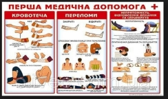

Принципи надання першої долікарської допомоги.
Перша допомога - це сукупність простих, доцільних дій, спрямованих на збереження здоров'я і життя потерпілого. По-перше: якщо є потреба і
можливість, необхідно винести потерпілого з місця події. По-друге:
оглянути ушкоджені ділянки тіла, оцінити стан потерпілого, зупинити
кровотечу і обробити ці ділянки. Потім необхідно іммобілізувати і
запобігти травматичному шокові.
При наданні першої долікарської допомоги треба керуватися такими принципами:
- правильність і доцільність;
- швидкість;
- продуманість, рішучість, спокій.
Надання першої допомоги при нещасних випадках:
1. При поранені необхідно зняти чи розірвати одежу, щоб виявити рану, витерти кров навколо рани і краї її змастити йодом, а після - накласти ватний тампон і забинтувати. Сильний крововилив зупинити за допомогою джгута. Коли немає джгута можна користуватися ремінцем, хусткою чи косинкою. Джгут накладається літом на 2 години, зимою на 1 годину.
2. При ударі слід застосувати лід, холодні компреси, стягуючі пов'язки.
3. При розтягненні м'язів кладуть холодні компреси в область суглоба.
4. При вивиху руки в ліктьовому суглобі необхідно прибинтувати руку до тулуба, не міняючи того кута, який виник в суглобі в результаті вивиху. Вправляти вивих без лікаря не можна.
5. Основне завдання першої допомоги при переломах - створити спокій потерпілому, для чого необхідно накласти шину з дошок, прутів, картону і т. п. При відкритому переломі спочатку накладають стерильну пов'язку на рану, а після уже бинтують шину. Шину слід покрити товстим шаром вати чи матерії, а після перебинтувати.
Втрата свідомості (ВС) - це стан, коли потерпілий не реагує ні на що, нерухомий, не відповідає на запитання.
Причини можуть бути різні, але всі вони пов'язані з ураженням центру свідомості мозку (при травмах, шоці, нестачі кисню, замерзанні тощо). Ознаки ВС виявляються у широкому спектрі симптомів, починаючи від шоку, непритомності, закінчуючи станом клінічної смерті. При ВС велику небезпеку для життя потерпілого становить западання язика і потрапляння блювотних мас у дихальні шляхи, що призводить до їх закупорювання.
Допомога. В першу чергу необхідно винести потерпілого з місця події, потім вивільнити дихальні шляхи, покласти на бік. У випадку зупинки дихання і серцебиття треба розпочати оживлення методом штучного дихання і закритого масажу серця. Людину, що втратила свідомість, не можна поїти. Транспортувати її треба у фіксованому стані на боці.
До оживлення входить проведення двох основних процедур: заходів щодо відновлення дихання (штучне дихання) та серцевої діяльності (зовнішній масаж серця). Тому, хто надає долікарську допомогу, треба розрізняти життя і смерть. Так, серцебиття визначається рукою або на слух зліва, нижче соска, а також на шиї, де проходить найбільша сонна артерія або ж на внутрішній стороні передпліччя. Наявність дихання встановлюється за рухами грудної клітки, за зволоженням дзеркала, прикладеного до носа потерпілого, за звуженням зіниць при раптовому освітленні очей або після їх затемнення рукою.
При встановленні ознак життя необхідно негайно розпочати надання допомоги. Але навіть при відсутності перелічених ознак до тих пір, поки немає повної впевненості у смерті потерпілого, необхідно надавати йому допомогу у повному обсязі. Смерть складається з двох фаз: клінічної та біологічної. Клінічна смерть триває 5-7 хв., але незворотні явища в тканинах ще відсутні. У цей період, поки ще не сталось тяжких уражень мозку, серця та легень, організм можна оживити. Першими ознаками біологічної смерті є: помутніння рогівки та її висихання, деформація зіниць при здавлюванні, трупне задубіння, трупні синюваті плями.
Штучне дихання (ШД). Найефективнішим способом ШД є дихання "з легень у легені", яке проводиться " з рота в рот" або " з носа в ніс". Для цього відводять голову потерпілого максимально назад і пальцями затискають ніс (або губи). Роблять глибокий вдих, притискають свої губи до губ потерпілого і швидко роблять глибокий видих йому в рот. Вдування повторюють кілька разів, з частотою 12-20 раз на хв. З гігієнічною метою рекомендується рот потерпілого прикрити шматком тонкої тканини.
Якщо пошкоджено і обличчя проводити ШД з "легень в легені" - неможливо, треба застосувати метод стиснення і розширення грудної клітки шляхом складання і притискання рук потерпілого до грудної клітки з їх наступним розведенням у боки.
Зовнішній масаж серця. Здійснюється у випадку його зупинки. При цьому робиться ритмічне стиснення серця між грудиною та хребтом. На нижню частину грудини кладуть внутрішньою стороною зап'ястя одну руку, на яку з силою надавлюють з частотою 60 разів на хв. покладеною зверху другою рукою. Сила здавлювання повинна бути такою, щоб грудина зміщувалась вглибину на чотири, п'ять см., масаж серця доцільно проводити паралельно з Ш Д для чого після двох - трьох штучних вдихів роблять 15 здавлювань грудної клітки.
При правильному масажі серця під час натискання на грудну клітку відчуватиметься легкий поштовх сонної артерії і звузяться протягом кількох секунд зіниці, а також порожевіє шкіра обличчя і губи, з'являться самостійне дихання. Не втрачайте пильності. Не забувайте про можливість зупинки серця або дихання. Ви тільки почали надавати першу допомогу. Будьте готові до раптового другого приступу. Щоб його не пропустити, треба стежити з зіницями, кольором шкіри і диханням, регулярно перевіряти частоту і ритмічність пульсу.
Шок. Причини - сильний біль, втрата крові, утворення у пошкоджених тканинах шкідливих продуктів, що призводить до виснажування захисних можливостей організму, внаслідок чого виникають порушення кровообігу, дихання, обміну речовин.
Ознаки - блідість, холодний піт, розширені зіниці, короткочасна втрата свідомості, посилене дихання і пульс, зниження АТ. При важкому шоці - блювання, спрага, попелястий колір обличчя, посиніння губ, мочок вух, кінчиків пальців, інколи може спостерігатися мимовільне сечовиділення.
Допомога: для запобігання і розвитку шоку є ефективна та своєчасна допомога, яка надається при будь-якому пораненні. Якщо шок посилився, необхідно надати першу допомогу, яка відповідає пораненню. Потім потерпілого закутують у ковдру, кладуть у горизонтальне положення з дещо опущеною головою. У разі спраги, коли не має пошкоджень внутрішніх органів, дають пити воду. Заходами, що перешкоджають виникненню шоку, є тиша, тепло, зменшення болю, пиття рідини.
Непритомність. Причини - раптова недостатність кровонаповнення, мозку під впливом нервово - емоційного страху, вертикального прискорення тіла, нестачі свіжого повітря тощо. Ці фактори сприяють рефлекторному розширенні м'язових судин, внаслідок чого знекровлюється мозок.
Ознаки - звичайно непритомність настає раптово, але інколи перед нею буває блідість, блювання, позиви до блювання, слабкість, позіхання, посилене потовиділення. У цей період пульс прискорюється, АТ знижується. Під час непритомності пульс уповільнюється до 40-50 ударів за хвилину.
Допомога. При непритомності треба покласти хворого на спину, трохи підняти (на 15-20 см) нижні кінцівки для поліпшення кровообігу мозку. Потім вивільнюють шию і груди від одягу, який їх здавлює, поплескують по щоках, поливають обличчя, груди холодною водою, дають нюхати нашатирний спирт. Якщо потерпілий починає дихати з хрипінням або дихання немає, треба думати про западання язика. У крайньому разі вживають заходи до оживлення.
Струс мозку. Причини - травматичне пошкодження тканин в діяльності мозку внаслідок падіння на голову, при ударах і забитті голови. При цьому можуть виникати дрібні крововиливи і набряк мозкової тканини.
Ознаки - моментальна втрата свідомості, яка може бути короткочасна або тривати кілька годин. Можуть спостерігатися порушення дихання, пульсу, нудота, блювання.
Допомога. Для запобігання удушенню потерпілого у несвідомому стані від западання язика або блювотних мас його кладуть на бік або на спину, при цьому голова має бути повернута на бік. На голову кладуть охолоджувальні компреси, при відсутності або порушенні дихання проводять штучне оживлення. Потерпілого ні в якому разі не можна намагатися напоїти! При першій можливості потерпілого треба негайно госпіталізувати до лікувального закладу у супроводі особи, яка вміє надавати допомогу для оживлення.
Кровотечі. Причини - пошкодження цілісності кровоносних судин внаслідок механічного або патологічного порушення.
Ознаки - артеріальна кровотеча характеризується яскраво-червоним кольором крові. Кров б'є фонтаном. При капілярній кровотечі вона виділяється краплями. Венозна кров має темно-червоне забарвлення.
Допомога. Артеріальну кровотечу зупиняють за допомогою давлючої пов'язки. При кровотечі з великим припливом крові - передавлюють артерію пальцем вище місця поранення, а потім накладають давлючу пов'язку. При кровотечі стегнової артерії накладають джгут вище від місця кровотечі. Під джгут кладуть шар марлі, щоб не пошкодити шкіру і нерви, і вставляють записку із зазначеним часом його накладання.
Тривалість використання джгута обмежується двома годинами, інакше омертвіє кінцівка. Якщо протягом цього періоду немає можливості забезпечити додаткову допомогу, то через 1,5-2 год. джгут на кілька хвилин відпускають, кровотечу при цьому зменшують іншими методами (давлючим тампоном), а потім знову затягують джгут. При кровотечі сонної артерії рану по можливості здавлюють пальцем, після чого набивають великою кількістю марлі, тобто роблять тампонування.
Капілярна кровотеча добре зупиняється давлючою пов'язкою. Для цього шкіру навколо обробляють розчином йоду, спирту, горілки, одеколону. Якщо з рани виступає сторонній предмет, в місці локалізації його треба зробити у пов'язці отвір, інакше цей предмет може ще глибше проникнути в середину і викликати ускладнення. Венозну кровотечу зупинити легше, ніж артеріальну. Для цього досить підняти кінцівку, максимально зігнути її в суглобі, накласти давлючу пов'язку.
Якщо потерпілий відкашлює яскраво червоною спіненою кров'ю - легенева кровотеча. При цьому дихання утруднене. Хворого кладуть у напівлежаче положення, під спину підкладають валик, на груди кладуть холодний компрес. Хворому забороняється говорити і рухатись, необхідна госпіталізація.
Кровотеча з травного тракту характеризується блюванням темно-червоною кров'ю, що зсілася. Потерпілому забезпечують напівлежаче положення, ноги згинають в колінах. При значній крововтраті може розвинутись шок. Перш за все треба зупинити кровотечу, по можливості напоїти чаєм. Потерпілому надають положення, при якому голова, для нормального її кровозабезпечення має бути дещо нижче тулуба.
Переохолодження. Наступає в наслідок порушення процесів терморегуляції при дії на організм холодового фактора і розладу функцій життєво важливих систем організму, який настає при цьому. Цьому сприяє втома, малорухомість.
Ознаки. На початковому етапі потерпілого морозить, прискорюється дихання і пульс, підвищується артеріальний тиск, потім настає переохолодження, рідшає пульс, дихання, знижується температура тіла. Після припинення дихання серце може ще деякий час скорочуватись. При зниженні температури тіла до 34-320С затьмарюється свідомість, припиняється вільне дихання, мова стає неусвідомленою.
Допомога. При легкому ступені переохолодження розігрівають тіло шляхом розтирання. Дають випити кілька склянок теплої рідини.
При середньому і важкому станах енергійно розтирають тіло шерстяною тканиною до почервоніння шкіри, дають багато гарячого пиття, молоко з цукром, 100-150г 40% спирту-ректифікату. Якщо потерпілий слабо дихає роблять штучне дихання. Після зігрівання потерпілого і відновлення життєвих функцій створюють спокій, закутують у теплий одяг.
Відмороження. Виникає тільки при тривалій дії холоду, при дотиканні тіла до холодного металу на морозі, і з зрідженим повітрям або сухою вуглекислотою, при підвищеній вологості і сильному вітрі, при не дуже низькій температурі повітря (ОС). Сприяє відмороженню загальне ослаблення організму в наслідок голодування, втоми або захворювання. Найчастіше відморожуються пальці рук і ніг, ніс, вуха, щоки.
Розрізняють 4 ступеня відмороження тканин:
- Почервоніння і набряк.
- Утворення пухирів.
- Утворення струпа.
- Омертвіння частин тіла.
Допомога. Розтирання і зігрівання на місці події. Бажано помістити потерпілого біля джерела тепла і тут продовжити розтирання. Краще розтирати відморожену частину спиртом, горілкою, одеколоном, а також рукавицею, хутровим коміром. Не можна розтирати снігом. Після порожевіння відморожене місце витирають до суха, змочують спиртом, горілкою або одеколоном. Взуття з відморожених частин тіла треба дуже акуратно зняти, якщо це не вдається зробити, треба розпороти ножем ті частини одягу або взуття, які утруднюють доступ до ушкоджених ділянок тіла.
Перегрівання. Настає внаслідок тривалого перебування на сонці без захисного одягу, при фізичному навантаженні у нерухомому вологому повітрі. Легкий ступінь - загальна слабкість, недомагання, запаморочення, нудота, посилена спрага, шкіра обличчя червона, вкрита потом, пульс і дихання прискорені, температура тіла 37,5 - 38,9°С.
Середній ступінь - температура тіла 39 - 40°С, сильний головний біль, різка м'язова слабкість, миготіння в очах, шум в вухах, болі в ділянці серця, виражене почервоніння шкіри; сильне потовиділення, посиніння губ, прискорення пульсу до 120 - 130 ударів за хвилину, часте і поверхневе дихання. Тяжкі ступені перегрівання тіла кваліфікуються по різному: якщо температура повітря висока і його вологість підвищена, говорять про тепловий удар.
Якщо довго діяли сонячні промені - сонячний удар. При цьому температура тіла піднімається вище 40°С, непритомність і втрата свідомості, шкіра потерпілого стає сухою, у нього починаються судороги, порушується серцева діяльність, може спостерігатися мимовільне сечовиділення, припиняється дихання.
Допомога. Треба покласти потерпілого в тінь або в прохолодне місце. Обмити його, облити прохолодною водою. На голову, шию, ділянки серця покласти холодний компрес, дати прохолодне пиття, піднести до носа ватку змочену нашатирним спиртом. Якщо різко порушується серцева діяльність, зупиняється дихання, треба налагодити штучне дихання.
Термічні опіки. Виникають при дії високої температури (полум'я, попадання на шкіру гарячої рідини, розжарених предметів, тощо).
Ознаки - залежать від тяжкості. Розрізняють 4 ступені опіків:
- І - почервоніння шкіри і набряк;
- II - пухирі наповнені жовтуватою рідиною;
- III - утворення некрозу шкіри (струпів);
- IV - обвуглювання тканин.
При великих опіках виникає шок.
Допомога. Необхідно швидко винести або вивести потерпілого з зони вогню. При займанні одягу треба негайно його зняти або накинути щось на потерпілого (покривало, мішок, тканину), тобто припинити доступ повітря до вогню. Полум'я на одязі можна гасити водою, засипати піском, гасити своїм тілом (якщо качатися по землі).
При опіках першого ступеня треба промити уражені ділянки шкіри асептичними засобами, потім обробити спиртом - ректифікатом. До обпечених ділянок не можна доторкатися руками, не можна проколювати пухирі і відривати прилиплі до місця опіку шматки одягу, не можна накладати мазі, порошки. Попечену поверхню накривають чистою марлею. Якщо потерпілого морозить треба зігріти його: укрити, дати багато пиття. При сильних болях можна дати 100-150мл вина або горілки. При втраті свідомості в результаті отруєння чадним газом треба дати понюхати нашатирний спирт. У випадку зупинки дихання треба зробити ШД.
Хімічні опіки. Виникають внаслідок дії на дихальні шляхи, шкіри і слизову оболонку концентрованих неорганічних та органічних кислот, лугів, фосфору. При загоранні або вибухах хімічних речовин утворюються термохімічні опіки.
Ознаки - за глибиною ураження тканин хімічні опіки поділяються на 4 ступені:
- чітко виражене почервоніння шкіри, легкий набряк, що супроводиться болем і почуттям опіку.
- великий набряк, утворення пухирів різного розміру і форми;
- потемніння тканин або побіління через кілька хвилин, годин. Шкіра набрякає, виникають різкі болі;
- глибоке змертвіння не лише шкіри, а й підшкірне жирової клітковини, м'язів, зв'язкового апарату суглобів.
Опіки кислотами дуже глибокі, на місці опіку утворюється сухий струп. При опіку лугами тканини вологі, тому ці опіки переносяться важче, ніж опіки кислотами.
Допомога. Якщо одяг потерпілого просочився хімічною речовиною, його треба швидко зняти, розрізати чи розірвати на місці події. Потім механічно видаляють речовини, що потрапили на шкіру, енергійно змивають їх струменем води не менше як 10-15 хв., поки не зникне специфічний запах. При попаданні хімічної речовини в дихальні шляхи необхідно прополоскати горло водним 3% розчином борної кислоти, цим же розчином промити очі.
Не можна змивати хімічні сполуки, які займаються або вибухають при дотиканні з вологою. Якщо не відомо яка хімічна речовина викликала опік і немає нейтралізуючого засобу, на місце опіку необхідно накласти чисту суху пов'язку, після чого треба спробувати зняти або зменшити біль.
Ураження електричним струмом. Причина - робота з технічними електричними засобами, пряме дотикання до провідника або джерела струму і непряме - за індукцією. Змінний струм уже під напругою 220 В викликає дуже тяжке ураження організму, яке посилюється при мокрому взутті і руках. Електричний струм викликає зміни в нервовій системі, її подразнення, параліч, спазм м'язів, опіки. Може статися судорожний спазм діафрагми головного дихального м'яза і серця. Внаслідок цього відбувається зупинка серця і дихання.
Допомога. При пораненні електричним струмом необхідно швидко знеструмити електролінію. Коли не можливо цього зробити, то для звільнення потерпілого від дії електроструму необхідно користуватися матеріалом, який знаходиться поблизу - сухою палкою, дошкою, одягом, гумовими рукавицями. Не можна брати металеві і мокрі предмети, а також торкатися до ділянок тіла потерпілого, яке не вкрите одягом.
Коли потерпілий при пам'яті, його треба покласти зручно і до прибуття лікаря забезпечити спокій, розстебнути одяг, забезпечити приплив свіжого повітря. При втраті свідомості необхідно провести додаткові заходи: скропити водою обличчя, розстебнути і зігріти тіло, дати понюхати нашатирний спирт. При відсутності чи слабкому нерівному диханні треба зробити штучне дихання. Штучне дихання необхідно проводити до повного його встановлення чи прибуття лікаря.
Ураження блискавкою. Ознаки подібні до ознак ураження електричним струмом і явищ електроопіку.
Допомога. Дії аналогічні діям при ураженні електричним струмом. Закопувати потерпілого в землю не можна: грудна клітка, здавлена землею не може розширюватись, навіть коли з'являється самостійне дихання.
Тривале здавлення тканин. Причина - падіння тягарів при обвалах, придавлювання в інших ситуаціях.
Ознаки - через кілька годин після здавлення тканин розвиваються тяжкі загальні порушення, схожі до шоку, сильний набряк здавленої кінцівки. Різко зменшується виділення сечі, вона стає бурою. З'являються блювання, марення пожовтіння, потерпілий втрачає свідомість, навіть може померти. Допомога. Постаратися звільнити від здавлення. Обкласти уражене місце льодом, холодними пов'язками, на кінцівку накласти шинну пов'язку, не туго бинтуючи пошкоджені ділянки тіла.
Попадання стороннього тіла в око. Причини - попадання пилинок, дрібних комах, рослинних часток, тощо. Ознаки - біль, різь, сльозотеча і почервоніння ока, сильне подразнення.
Допомога. Для видалення стороннього тіла необхідно відтягнути або вивернути повіку. Стороннє тіло видаляють кінчиком чистого носовика або тканини.
Надання першої допомоги при утопленні. При справжньому (мокрому) утопленні рідина обов'язково потрапляє в легені (75-95% всіх утоплень). При рефлекторному звуженні в голосову щілину (сухе утеплення) вода не потрапляє в легені і людина гине від механічної асфіксії (5-20% утоплень). Зустрічаються утеплення від первинної зупинки серця і дихання внаслідок травми, температурного шоку. Утеплення може наступити при тривалому пірнанні, коли кількість кисню в організмі зменшується до рівня, що не відповідає потребам мозку.
Ознаки - у випадку мокрого утоплення, коли потерпілого рятують зразу після занурення в воду, у початковий період після його підняття на поверхню відмічається загальмований або збуджений стан, шкіра і видимі слизові бліді, дихання супроводжується кашлем, пульс прискорений, потерпілого морозить. Верхній відділ живота - здутий, нерідко буває блювання шлунковим вмістом з проковтнутою водою.
Вказані ознаки можуть швидко зникнути, але інколи слабість, запаморочення, біль у грудях та кашель зберігається протягом кількох днів. Якщо тривалість остаточного занурення потерпілого становило не більше кількох хвилин і після витягнення з води не було свідомості, шкіра синюшна, з рота і з носа витікає піна рожевого кольору, зіниці слабо реагують на світло, щелепи міцно стиснуті, дихання уривчасте або відсутнє, пульс слабий не ритмічний. Стан організму характеризується як агональний.
У тих випадках, коли після остаточного занурення потерпілого під воду на 2-3 хв. самостійне дихання і серцева діяльність як правило, відсутні, зіниці розширенні і не реагують на світло, шкіра синюшна. Всі ці ознаки свідчать про настання клінічної смерті. При сухому утопленні посиніння шкіри виражене менше, в агональному періоді відсутнє витікання піни з рота, у випадку ж клінічної смерті її тривалість становить 4-6 хв.
Утоплення, що розвинулось внаслідок первинної зупинки серцевої діяльності, характеризується різкою блідістю шкіри, відсутністю рідини в порожнині рота і носа, зупинкою дихання і серця, розширення зіниць. У таких утоплеників клінічна смерть може тривати до 10-12 хвилин.
Допомога. Рятувати утопленика треба швидко, бо смерть настає через 4-6 хвилин після утоплення. Підпливши до потопаючого ззаду, треба взяти його під пахви так, щоб голова була над водою, повернута обличчям, і пливти з ним до берега. Потім якнайшвидше треба очистити порожнину рота і глотку утопленого від слизу, мулу та піску, швидко видалити воду з дихальних шляхів: перевернути хворого на живіт, перегнути через коліно, щоб голова звисала вниз, і кілька разів надавити на спину. Після цього потерпілого повертають обличчям догори і починають робити оживлення.
Коли утоплений врятований у початковому періоді утоплення, треба перш за все вжити заходів до усунення емоційного стресу: зняти мокрий одяг, до суха обтерти тіло, заспокоїти. Якщо потерпілий без свідомості при досить спонтанному диханні, його кладуть горизонтально, піднімають на 40-50 градусів ноги, дають подихати нашатирним спиртом. Одночасно зігрівають потерпілого, проводять масаж грудної клітки, розтирають руки і ноги.
Отруєння загального характеру. Причина - вживання несвіжих або заражених хвороботворними бактеріями продуктів. Захворювання, як правило починається через 2-3 год. після вживання заражених продуктів, інколи через 20-26 год.
Ознаки - загальна слабість. Нудота, блювота (неодноразова), переймоподібний біль в животі, блідість, підвищення температури тіла до 38-400С, частий слабкий пульс, судоми. Блювання і пронос зневоднюють організм, сприяють втраті солей.
Допомога. Потерпілому негайно кілька разів промивають шлунок (примушують випити 1,5-2 л води, а потім викликають блювоту подразненням кореня язика) до появи чистих промивних вод. Потім дають багато чаю, соків, але не їжу. В перший час необхідний постійний нагляд за хворим, щоб запобігти зупинці дихання і кровообігу.
При отруєнні ядохімікатами потерпілого треба негайно винести з зараженої зони, звільнити від забрудненого і тісного одягу. Попавши в очі чи на шкіру ядохімікати потрібно змити великою кількістю води. Очі промити 2% розчином харчової соди чи борної кислоти.
При попаданні ядохімікатів в шлунок потерпілому дати випити кілька склянок води чи слабо рожевого розчину марганцю. Після блювання дати випити півсклянки води з 2-3 ложками активованого вугілля. Ввести слабкі засоби (100-150 мл 30% розчину сірчанокислої магнезії чи гірської солі 20 г на півсклянки води).
При гострому отруєнні чадним газом потерпілого необхідно винести з зони зараження. Ліквідувати все, що затрудняє дихання, забезпечити тілу зручний стан. При втраті свідомості дати вдихнути нашатирний спирт, намочити груди і обличчя холодною водою і розтерти.
Коли дихання не порушено, необхідно негайно зробити інгаляцію киснем; при зупинці дихання інгаляцію киснем вводити разом з штучним диханням.
Всі заходи першої допомоги проводити до встановлення нормального дихання і кровообігу.
Гіпоксія (кисневе голодування). Головною причиною виникнення розладів діяльності організму є зниження напруги кисню у крові - гіпоксія. Виникає у всіх випадках, коли зменшується парціальний тиск кисню у дихальному середовищі, також при запаленні легень, інших порушеннях легеневої тканини, редукції гемоглобіну, при отруєнні чадним газом. Гостра гіпоксія може виникнути при тривалій затримці дихання, під час пірнання, при інтенсивному фізичному навантаженні.
Ознаки - вираженість прояву залежить від швидкості падіння парціального тиску кисню у дихальній суміші. Розрізняють 4 стадії:
1. Збільшення легеневої вентиляції, прискорення пульсу, легке запаморочення. Підвищення артеріального тиску.
2. Послаблюється мислення, дихання і пульс часті, стук у скронях, запаморочення, інколи настає періодичне дихання (Чейн-Стокса).
3. Посиніння шкірних покривів, плутаність мислення, нудота, блювота, клінічні судоми, втрата свідомості.
4. Втрата свідомості, можлива зупинка дихання, після чого серце ще деякий час продовжує скорочуватись.
Відсутність чітких ознак кисневого голодування робить його особливо небезпечним.
Допомога. Максимально швидко забезпечують умови для нормального дихання - атмосферним повітрям, при можливості дають вдихати чистий кисень. Якщо гіпоксія супроводиться втратою свідомості, зупинкою дихання, роблять штучне дихання, непрямий масаж серця. Після успішного здійснення реанімаційних заходів - створюють спокій, зігрівають потерпілого.
Отже, описані причини, ознаки і необхідні дії щодо надання першої допомоги потерпілим в умовах боротьби за виживання, ми сподіваємося, відіграють свою позитивну роль у складних і екстремальних ситуаціях виробничої сфери, а також у побуті. Але треба завжди пам'ятати, що важливо точно визначити симптоми, прийняти правильні рішення і, не втрачаючи часу, починати надавати допомогу, чітко додержуючись основних принципів: правильність і доцільність, швидкість, продуманість, рішучість і спокій.
Термінові міри після укусу комара, москіта. Витяжкою з нагідок змащувати місце через кожні 15-20 хв. Посипати порошком фурациліну місце укусу після змащування витяжкою нагідок, або:
- Мазь з олії богульника - змастити місце укусу.
- Намочити місце укусу 5% содовим розчином, після цього помазати дитячим кремом.
- Вкушене місце протерти розчином аміаку.
- Компрес з тертої сирої картоплі.
- Область укусу змастити 1-2% розчином калію перманганату, спиртово-ефірної суміші.
- Соком листя петрушки змастити місце укусу.
При укусі бджіл і ос. Добре допомагає змащування місця укусу свіжим соком цвіту нагідок чи витяжки нагідок, або:
- Богульник -витяжка, 2ст. ложки на склянку окропу.
- Відвар з коріння череди.
- Листя петрушки - сік листя тертого коріння петрушки, як знеболюючий засіб.
- Подорожник широколистий - свіжі порізані листя прикладені до місця укусу, висмоктують отруту, обезболюють, попереджують появу пухлин.
- Ріпчаста цибуля, розрізана навпіл - прикласти до місця укусу.
- Цвіт малини - змастити настоєм.
- Таблетка валідолу - прикласти до місця укусу.
- Розтерте листя м'яти.
- Розтерте листя кульбаби.
- Пижма, цвіт розтертий. При багаторазових укусах - ванни з свіжого коріння і плодів бузини.
Перелік медичних засобів першої допомоги.
Медичні засоби | Призначення | Кількість |
Власні перев'язочні антисептичні засоби | Для накладання пов'язок | 5 шт. |
Бинти | -//-//- | 5 шт. |
Вата | -//-//- | 5 пач. |
Ватно-марлевий бинт | Для бинтування при переломах | 3 шт. |
Джгут | Зупинка кровотечі | 1 шт. |
Шини | Закріпити кінцівки при переломах і вивихах | 3-4 шт. |
Гумовий міхур для льоду | Охолодження пошкодженого місця при переломах і ударах | 1 шт. |
Чайник | Приймати ліки і промивати очі | 1 шт. |
Настойка йоду
| Змащувати навколо рани; свіжі синяки, подряпини | 10 ампул |
Нашатирний спирт | Для приведення в свідомість при непритомностях, втраті свідомості | 1 флакон або 10 ампул |
Краплі валеріани | Для захисту нервової системи і серцевої нестачі | 1 тюб. |
Валідол | Застосовувати при сильних болях в області серця по 1 табл. під язик | 1 пак. |
Борна кислота | Для приготування розчинів | 1 пак. |
Сода питна | Для приготування розчинів | 1 пакет |
Розчин борної кислоти (2-4%) | Для промивання очей, полоскання рота | 250 мл. |
Розчин питної соди (2-4%) | Промивати очі і полоскати рот при опіках кислотою | 500 мл. |
Розчин оцтової кислоти (3%) | Промивати шкіру при опіках лужною содою | 500 мл. |
Марганцевокислий калій | Промивати шкіру при опіках кислотою і лужними содами, промивати шлунок при отруєнні | 15 г. |
Вазелін | Змащувати шкіру при опіках І ступеня | 2 короб. |
Борна мазь | Змащувати обморожені ділянки шкіри | 1 банка |
Мило і рушник |
|
|